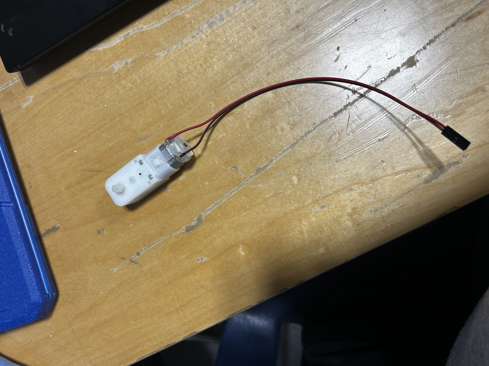
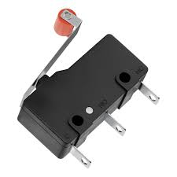
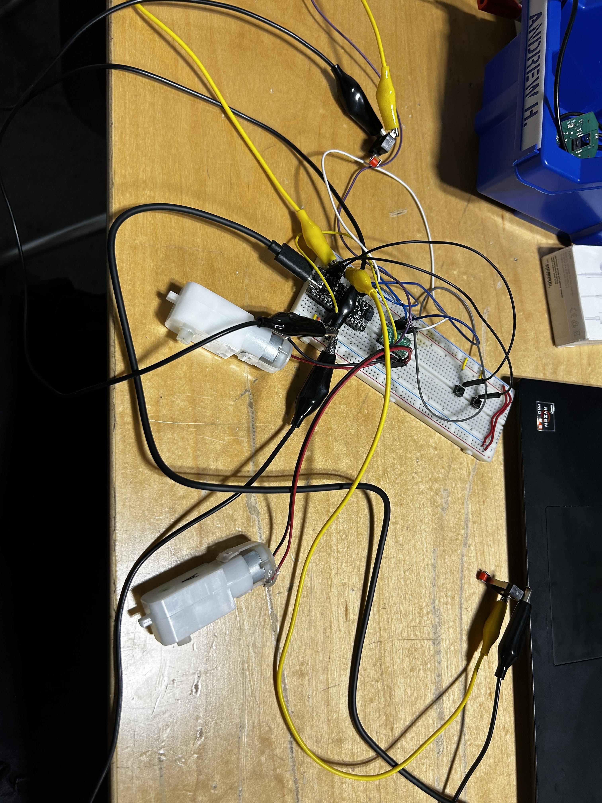

soph week 3/3 - 3/14
long blog post because we didn’t really do much last week, so i’m cramming everyhting into this blog post.
we started the sumobot project, where we have to create a sub500g robot which will play sumo with other robots.
idea
last week, i spent most of my time researching professional sumobot competitions and studying the strategies used by other robots.
since many robots will likely use similar hardware, i decided to focus on a unique design. this gives me an idea of how other robots might operate and allows me to develop strategies to counter them.
motors
i had two options for plastic motors: 120:1 and 200:1. after some research, i chose the 200:1 motors because they sacrifice speed for more torque. since the robots are lightweight, i think torque will be more important than speed.
after soldering one of the motors, i noticed that the other motor was faster, so i soldered another one to balance them out.
sensors
initially, i planned to use an irs21b ir sensor, but i decided against it because i didn’t want to deal with calibration. instead, my friends and i opted for roller lever switches. i also heard that some people paint their sumobots white to confuse ir sensors, so this seemed like a better choice.
simple code was written to control the bot based on three states:
1. if the left sensor is triggered, it moves right.
2. if the right sensor is triggered, it moves left.
3. if both sensors are triggered, it performs a star pattern to avoid being pushed off.

hopefully something like this. will have to create a body to test my code.
circuit board test
yes this is a mess. it’ll be cleaned later.
the circuit includes a metromini as the microcontroller, an md17a to control the motors, two motors, two roller lever switches, and two buttons to initialize different start sequences depending on which side of the arena the robot starts on.
i’ll start designing the pcb soon, unless i decide to add more components later (more on that below).
code
void forward() {
digitalWrite(MOTOR_A1, HIGH); digitalWrite(MOTOR_B1, HIGH); digitalWrite(MOTOR_A2, LOW); digitalWrite(MOTOR_B2, LOW);
}
void right() {
digitalWrite(MOTOR_A1, HIGH); digitalWrite(MOTOR_B1, LOW); digitalWrite(MOTOR_A2, LOW); digitalWrite(MOTOR_B2, LOW);
}
void sstop() {
digitalWrite(MOTOR_A1, LOW); digitalWrite(MOTOR_B1, HIGH); digitalWrite(MOTOR_A2, LOW); digitalWrite(MOTOR_B2, LOW);
}
void left() {
digitalWrite(MOTOR_A1, LOW); digitalWrite(MOTOR_B1, HIGH); digitalWrite(MOTOR_A2, LOW); digitalWrite(MOTOR_B2, LOW);
}
i created different functions depending on what direction the robot will have to move (left, right, forward, backwards(eventually), and stop).
in addition, i created specific sequences and patterns depending on sensor state and which button is clicked. startL and startR will wait for the enemy sumobot, and attack them when they go forward towards the edge of the arena.
void startL() { // assuming starting on the "left"
// aligning to atk from the hypotenuse
right();
delay(500);
sstop();
delay(500);
// moving forward along the hypotenuse
forward();
delay(500);
sstop();
}
void startL() { // assuming starting on the "right"
// aligning to atk from the hypotenuse
left();
delay(500);
sstop();
delay(500);
// moving forward along the hypotenuse
forward();
delay(500);
sstop();
}
void star() {
for (int i = 0; i < 5; i++) {
forward();
delay(500);
sstop();
delay(100);
right();
delay(500);
sstop();
Serial.print("star:"); Serial.println(i); // debugging purposes
delay(100);
}
sstop();
}
something like this hopefully, but i’m assuming that they will be able to detect the white line, and my robot will push them as a result.
future plans?
i’m considering adding collapsible wings to my sumobot. this would allow it to meet the size requirements while expanding during the match to potentially confuse opponents using front-mounted ir sensors.

something like this, but the wings can collapse.
furthermore, my code is also broken, where my roller lever sensors when only one is clicked doesn’t work. this will be something i have to fix. in addition, i don’t know if my code even works, as i haven’t made a body or wheels for my sumobot.